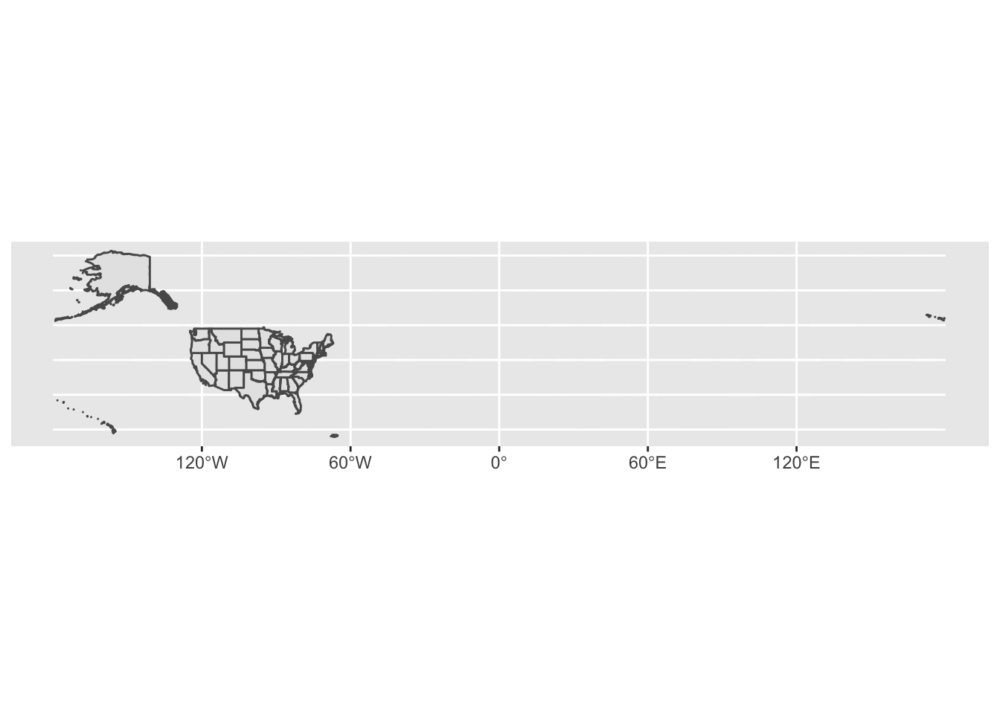
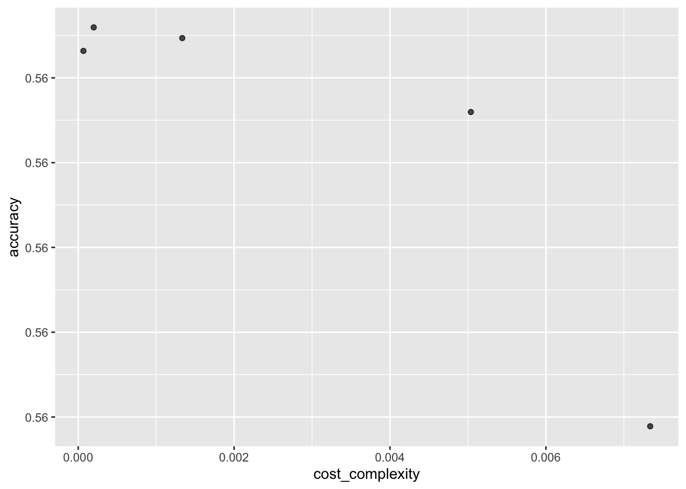
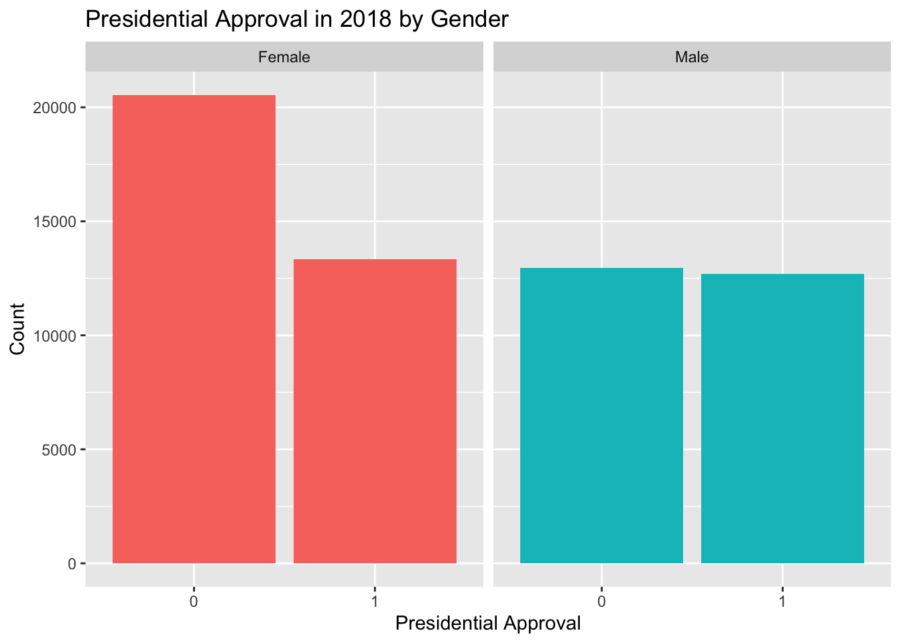

Chapter 10 Pitfalls
This chapter is still very much a draft. Come back in a few weeks for a better version.
The fundamental goal of data modeling is to make explicit the relationship between:
- an outcome variable \(y\), also called a dependent variable or response variable, and
- an explanatory/predictor variable \(x\), also called an independent variable or covariate.
Another way to state this is using mathematical terminology: we will model the outcome variable \(y\) “as a function” of the explanatory/predictor variable \(x\). When we say “function” here, we aren’t referring to functions in R like the ggplot() function, but rather to a mathematical function. But, why do we have two different labels, explanatory and predictor, for the variable \(x\)? That’s because even though the two terms are often used interchangeably, roughly speaking data modeling serves one of two purposes:
- Modeling for explanation: When you want to explicitly describe and quantify the relationship between the outcome variable \(y\) and an explanatory variable \(x\), determine the importance of any relationships, have measures summarizing these relationships, and possibly identify any causal relationships between the variables. (What’s a causal relationship? Remember the Rubin Causal Model! The causal effect of \(x\) on \(y\) is the difference in potential outcomes of \(y\) given different values of \(x\).)
- Modeling for prediction: When you want to predict an outcome variable \(y\) based on the information contained in a set of predictor variables \(x\). Unlike modeling for explanation, however, you don’t care so much about understanding how all the variables relate and interact with one another, but rather only whether you can make good predictions about \(y\) using the information in \(x\).
For example, say you are interested in an outcome variable \(y\) of whether patients develop lung cancer and information \(x\) on their risk factors, such as smoking habits, age, and socioeconomic status. If we are modeling for explanation, we would be interested in both describing and quantifying the effects of the different risk factors. One reason could be that you want to design an intervention to reduce lung cancer incidence in a population, such as increasing family income. In that case, you would want to know the causal effect of income on the incidence of lung cancer.
If we are modeling for prediction, however, we wouldn’t care so much about understanding how all the individual risk factors contribute to lung cancer, but rather only whether we can make good predictions of which people will contract lung cancer.
Linear regression involves a numerical outcome variable \(y\) and explanatory variables \(x\) that are either numerical or categorical. Furthermore, the relationship between \(y\) and \(x\) is assumed to be linear, or in other words, a line. However, we’ll see that what constitutes a “line” will vary depending on the nature of your explanatory variables \(x\).
In Section 10.1, the explanatory variable will be numerical. This scenario is known as simple linear regression. In Section ??, the explanatory variable will be categorical.
In Chapter 11 on multiple regression, we’ll extend the ideas behind basic regression and consider models with two explanatory variables \(x_1\) and \(x_2\). In Section ??, we’ll have two numerical explanatory variables. In Section ??, we’ll have one numerical and one categorical explanatory variable. In particular, we’ll consider two such models: interaction and parallel slopes models.
Let’s now begin with basic regression, which refers to linear regression models with a single explanatory variable \(x\). We’ll also discuss important statistical concepts like the correlation coefficient, that “correlation isn’t necessarily causation,” and what it means for a line to be “best-fitting.”
Let’s now load all the packages needed for this chapter (this assumes you’ve already installed them). The main packages are ones we have used before. The Advanced Section of the chapter makes use of
- The rstanarm package, which provides an interface to the statistical inference engine, Stan, for Bayesian Regression Modeling.
- The tidybayes package, which aids in formating Bayesian modeling outputs in a tidy manner and provides ggplot geoms for plotting.
- The broom.mixed package, which provides broom-type functions for the output objects generated by rstanarm.
library(tidyverse)
library(PPBDS.data)
library(broom)
library(broom.mixed)
library(parsnip)
library(skimr)
library(gapminder)
library(rstanarm)
library(rsample)
library(tidybayes)
library(tune)
library(yardstick)10.1 Teaching evaluations: one numerical explanatory variable
Why do some professors and instructors at universities and colleges receive high teaching evaluations scores from students while others receive lower ones? Are there differences in teaching evaluations between instructors of different demographic groups? Could there be an impact due to student biases? These are all questions that are of interest to university/college administrators, as teaching evaluations are among the many criteria considered in determining which instructors and professors get promoted.
In this section, we’ll keep things simple for now and try to explain differences in instructor ratings within the Harvard music department based on average hourly workload for that class. Could it be that instructors with lower hourly workloads also have higher ratings? Could it be instead that instructors with lower hourly workloads tend to have lower ratings? Or could it be that there is no relationship between workload and teaching evaluations? We’ll answer these questions by modeling the relationship between rating and workload using simple linear regression where we have:
- A numerical outcome variable \(y\) (the instructor’s teaching rating) and
- A single numerical explanatory variable \(x\) (the average hourly workload for the class).
10.1.1 Exploratory data analysis
The data on the Q Guide Music Department ratings can be found in the qscores data frame included in the PPBDS.data package. However, to keep things simple, let’s select() only the subset of the variables we’ll consider in this chapter, and save this data in a new data frame called qscores_ch10:
library(PPBDS.data)
qscores_ch10 <- qscores %>%
mutate(rating = rating*100) %>%
filter(department == "MUSIC") %>%
select(number, rating, hours, enrollment)A crucial step before doing any kind of analysis or modeling is performing an exploratory data analysis, or EDA for short. EDA gives you a sense of the distributions of the individual variables in your data, whether any potential relationships exist between variables, whether there are outliers and/or missing values, and (most importantly) how to build your model. Here are three common steps in an EDA:
- Most crucially, looking at the raw data values.
- Computing summary statistics, such as means, medians, and interquartile ranges.
- Creating data visualizations.
Let’s perform the first common step in an exploratory data analysis: looking at the raw data values. Because this step seems so trivial, unfortunately many data analysts ignore it. However, getting an early sense of what your raw data looks like can often prevent many larger issues down the road.
You can do this by using RStudio’s spreadsheet viewer or by using the glimpse() function as introduced in Subsection ?? on exploring data frames:
## Rows: 14
## Columns: 4
## $ number <chr> "10B", "14B", "161R", "16B", "175R", "189R", "20", "10A", …
## $ rating <dbl> 400, 490, 440, 480, 420, 480, 400, 420, 470, 480, 480, 490…
## $ hours <dbl> 3.5, 2.8, 5.2, 2.7, 3.4, 3.7, 4.3, 3.1, 2.6, 3.5, 2.5, 3.7…
## $ enrollment <int> 43, 22, 19, 24, 16, 55, 56, 46, 29, 16, 24, 40, 85, 25## Rows: 14
## Columns: 4
## $ number <chr> "10B", "14B", "161R", "16B", "175R", "189R", "20", "10A", …
## $ rating <dbl> 400, 490, 440, 480, 420, 480, 400, 420, 470, 480, 480, 490…
## $ hours <dbl> 3.5, 2.8, 5.2, 2.7, 3.4, 3.7, 4.3, 3.1, 2.6, 3.5, 2.5, 3.7…
## $ enrollment <int> 43, 22, 19, 24, 16, 55, 56, 46, 29, 16, 24, 40, 85, 25## number rating hours enrollment
## Length:14 Min. :290 Min. :2.5 Min. :16
## Class :character 1st Qu.:420 1st Qu.:2.9 1st Qu.:22
## Mode :character Median :455 Median :3.5 Median :27
## Mean :441 Mean :3.5 Mean :36
## 3rd Qu.:480 3rd Qu.:3.7 3rd Qu.:45
## Max. :490 Max. :5.2 Max. :85Observe that Rows: 14 indicates that there are 14 rows/observations in qscores_ch10, where each row corresponds to one observed music course at Harvard. It is important to note that the observational unit is an individual course and not an individual instructor. Recall from Subsection ?? that the observational unit is the “type of thing” that is being measured by our variables. Since instructors teach more than one course in an academic year, the same instructor will appear more than once in the data. Hence there are fewer than 748 unique instructors being represented in qscores_ch10.
To further explore the data, we can add a second function to our initial call of glimpse(): the summary() function. summary() can provide us with useful result summaries of all the observations in a dataset for each variable. Calling glimpse() on qscores_ch10 and then summary() allows us to see the minimum and maximum values along with several other quantiles for numeric variables and tells us the number of observations, class, and mode of categorical variables. For instance, examining the hours column in the summary() results shows that the minimum number of workload hours reported for a Harvard music class in the Q Guide was 2.5 hours, while the median was 3.5 hours and the maximum was 5.2 hours.
However, let’s fully describe only the 4 variables we selected in qscores_ch10:
-
number: An identification variable used to distinguish among courses within the same department. Courses in different departments may have the same number. -
rating: A numerical variable of the overall quality of a course, where the average is computed from the evaluation scores from all the students who choose to provide feedback for that course. Ratings of 1 are lowest and 5 are highest. This is the outcome variable \(y\) of interest. -
hours: A numerical variable of the amount of work students put into a course per week in hours, where the average is computed from the evaluation scores from all students who choose to provide feedback for that course. This is the explanatory variable \(x\) of interest. -
enrollment: A numerical variable of the amount of students enrolled in a course.
An alternative way to look at the raw data values is by choosing a random sample of the rows in qscores_ch10 by piping it into the sample_n() function from the dplyr package. Here we set the size argument to be 5, indicating that we want a random sample of 5 rows. We display the results below. Note that due to the random nature of the sampling, you will likely end up with a different subset of 5 rows.
## # A tibble: 5 x 4
## number rating hours enrollment
## <chr> <dbl> <dbl> <int>
## 1 15A 480 3.5 16
## 2 10B 400 3.5 43
## 3 23 430 3.1 85
## 4 175R 420 3.4 16
## 5 189R 480 3.7 55Now that we’ve looked at the raw values in our qscores_ch10 data frame and got a preliminary sense of the data, let’s move on to the next common step in an exploratory data analysis: computing summary statistics. Let’s start by computing the mean and median of our numerical outcome variable rating and our numerical explanatory variable hours. We’ll do this by using the summarize() function from dplyr along with the mean() and median() summary functions we saw in Section 1.4.7.
qscores_ch10 %>%
summarize(mean_hours = mean(hours),
mean_rating = mean(rating),
median_hours = median(hours),
median_rating = median(rating))## # A tibble: 1 x 4
## mean_hours mean_rating median_hours median_rating
## <dbl> <dbl> <dbl> <dbl>
## 1 3.46 441. 3.45 455However, what if we want other summary statistics as well, such as the standard deviation (a measure of spread), the minimum and maximum values, and various percentiles?
Typing out all these summary statistic functions in summarize() would be long and tedious. Instead, let’s use the convenient skim() function from the skimr package. This function takes in a data frame, “skims” it, and returns commonly used summary statistics. Let’s take our qscores_ch10 data frame, select() only the outcome and explanatory variables teaching score and hours, and pipe them into the skim() function:
TABLE 10.1: Data summary
| Name | Piped data |
| Number of rows | 14 |
| Number of columns | 2 |
| _______________________ | |
| Column type frequency: | |
| numeric | 2 |
| ________________________ | |
| Group variables | None |
Variable type: numeric
| skim_variable | n_missing | complete_rate | mean | sd | p0 | p25 | p50 | p75 | p100 | hist |
|---|---|---|---|---|---|---|---|---|---|---|
| rating | 0 | 1 | 440.7 | 54.70 | 290.0 | 420.0 | 455.0 | 480.0 | 490.0 | ▁▁▂▅▇ |
| hours | 0 | 1 | 3.5 | 0.77 | 2.5 | 2.9 | 3.5 | 3.7 | 5.2 | ▆▇▃▃▂ |
For the numerical variables teaching rating and hours it returns:
-
n_missing: the number of missing values -
complete_rate: the percentage of non-missing or complete values -
mean: the average -
sd: the standard deviation -
p0: the 0th percentile: the value at which 0% of observations are smaller than it (the minimum value) -
p25: the 25th percentile: the value at which 25% of observations are smaller than it (the 1st quartile) -
p50: the 50th percentile: the value at which 50% of observations are smaller than it (the 2nd quartile and more commonly called the median) -
p75: the 75th percentile: the value at which 75% of observations are smaller than it (the 3rd quartile) -
p100: the 100th percentile: the value at which 100% of observations are smaller than it (the maximum value)
Looking at this output, we can see how the values of both variables are distributed. For example, the mean music course rating was 4.41 out of 5, whereas the mean workload per week was 3.46 hours. Furthermore, the middle 50% of course ratings was between 4.2 and 4.8 (the first and third quartiles), whereas the middle 50% of hours of work falls within 2.87 to 3.7, with a maximum reported workload of 5.2 hours per week.
The skim() function only returns what are known as univariate summary statistics: functions that take a single variable and return some numerical summary of that variable. However, there also exist bivariate summary statistics: functions that take in two variables and return some summary of those two variables. In particular, when the two variables are numerical, we can compute the correlation coefficient. Generally speaking, coefficients are quantitative expressions of a specific phenomenon. A correlation coefficient is a quantitative expression of the strength of the linear relationship between two numerical variables. Its value ranges between -1 and 1 where:
- -1 indicates a perfect negative relationship: As one variable increases, the value of the other variable tends to go down, following a straight line.
- 0 indicates no relationship: The values of both variables go up/down independently of each other.
- +1 indicates a perfect positive relationship: As the value of one variable goes up, the value of the other variable tends to go up as well in a linear fashion.
The following figure gives examples of 9 different correlation coefficient values for hypothetical numerical variables \(x\) and \(y\). For example, observe in the top right plot that for a correlation coefficient of -0.75 there is a negative linear relationship between \(x\) and \(y\), but it is not as strong as the negative linear relationship between \(x\) and \(y\) when the correlation coefficient is -0.9 or -1.
FIGURE 10.1: Nine different correlation coefficients.

The correlation coefficient can be computed using the cor() summary function within a summarize():
In our case, the correlation coefficient of -0.49 indicates that the relationship between overall course rating and average weekly workload in hours is negative. There is a certain amount of subjectivity in interpreting correlation coefficients, especially those that aren’t close to the extreme values of -1, 0, and 1.
Let’s now perform the last of the steps in an exploratory data analysis: creating data visualizations. Since both the rating and hours variables are numerical, a scatterplot is an appropriate graph to visualize this data. Let’s do this using geom_point() and display the result. Furthermore, let’s highlight the six points in the top right of the visualization in a box.
qscores_ch10 %>%
ggplot(aes(x = hours, y = rating)) +
geom_point() +
labs(x = "Hours of Work Per Week",
y = "Q Guide Rating",
title = "Scatterplot of relationship between Q Scores and Weekly Workload")FIGURE 10.2: Q Guide Scores at Harvard
Observe that most courses have reported average workloads between 2 and 10 hours per week, while most teaching scores lie between 3 and 5. Furthermore, while opinions may vary, it is our opinion that the relationship between Q guide rating and weekly workload in hours is “weakly negative.” This is consistent with our earlier computed correlation coefficient of -0.49.
Furthermore, there appear to be six points in the top-right of this plot highlighted in the box. However, this is not actually the case, as this plot suffers from overplotting. Recall from Subsection ?? that overplotting occurs when several points are stacked directly on top of each other, making it difficult to distinguish them. So while it may appear that there are only six points in the box, there are actually more. This fact is only apparent when using geom_jitter() in place of geom_point(). We display the resulting plot along with the same small box as before.
qscores_ch10 %>%
ggplot(aes(x = hours, y = rating)) +
geom_jitter() +
labs(x = "Hours of Work Per Week", y = "Q Guide Score",
title = "Scatterplot of relationship between Q Scores and Weekly Workload")FIGURE 10.3: Q Guide Scores at Harvard.
It is now apparent that there are ?? points in the area highlighted in the box and not six as originally suggested. Recall from Subsection ?? on overplotting that jittering adds a little random “nudge” to each of the points to break up these ties. Furthermore, recall that jittering is strictly a visualization tool; it does not alter the original values in the data frame qscores_ch10. To keep things simple going forward, however, we’ll only present regular scatterplots rather than their jittered counterparts.
Let’s build on the unjittered scatterplot by adding a “best-fitting” line: of all possible lines we can draw on this scatterplot, it is the line that “best” fits through the cloud of points. We do this by adding a new geom_smooth(method = "lm", se = FALSE) layer to the ggplot() code that created the scatterplot. The method = "lm" argument sets the line to be a “linear model.” The se = FALSE argument suppresses standard error uncertainty bars. (We defined the concept of standard error in Subsection 6.4.2.)
qscores_ch10 %>%
ggplot(aes(x = hours, y = rating)) +
geom_jitter() +
labs(x = "Hours of Work Per Week", y = "Q Guide Score",
title = "Scatterplot of relationship between Q Scores and Weekly Workload for Music Classes") +
geom_smooth(method = "lm", se = FALSE)## `geom_smooth()` using formula 'y ~ x'FIGURE 10.4: Regression line.
The line in the resulting figure is called a “regression line.” The regression line is a visual summary of the relationship between two numerical variables, in our case the outcome variable rating and the explanatory variable hours. The positive slope of the blue line is consistent with our earlier observed correlation coefficient of -0.49 suggesting that there is a negative relationship between these two variables: as students report higher average weekly workloads for music classes, courses receive lower teaching evaluations. We’ll see later, however, that while the correlation coefficient and the slope of a regression line always have the same sign (positive or negative), they typically do not have the same value.
Furthermore, a regression line is “best-fitting” in that it minimizes some mathematical criteria. We present these mathematical criteria in Section ??, but we suggest you read this subsection only after first reading the rest of this section on regression with one numerical explanatory variable.
<<<<<<< HEAD # Machine Learning {#machine-learning} ======= ### Prudence
10.2 Machine Learning
Now that we have spent some time exploring these Q scores, it is time to dive in deeper and investigate interesting relationships within the data. Thus far, we have learned four models: linear regression, logistic regression, CART, and random forest. But there are hundreds more! We need a consistent way to try lots of models and to compare them. Hence, we introduced in the last chapter the tidymodels collection of packages.
But with so many models to choose from, how do we know which models are best? Recall that we came up with several different models for each of our example data sets. Which one should we use? The framework of machine learning helps.
Perhaps the most popular data science methodologies come from the field of machine learning. Machine learning is the study and application of algorithms that learn from and make predictions on data. From search results to self-driving cars, it has manifested itself in all areas of our lives and is one of the most exciting and fast-growing fields of research in the world of data science. Machine learning success stories include the handwritten zip code readers implemented by the postal service, speech recognition technology such as Apple’s Siri, movie recommendation systems, spam and malware detectors, housing price predictors, and driverless cars.
There are a wide variety of machine learning algorithms, including the models we have learned so far. We won’t introduce new models this chapter. Rather, we’ll use linear regression as an example for how to apply machine learning techniques to improve your predictive modeling.
10.3 The process of machine learning
In machine learning, modeling is a process, not a single step. Common steps during model building are:
- Estimating model parameters (i.e. training models)
- Determining the values of tuning parameters that cannot be directly calculated from the data
- Model selection (within a model type) and model comparison (between types)
- Calculating the performance of the final model that will generalize to new data
Many books and courses portray predictive modeling as a short sprint. A better analogy would be a marathon or campaign (depending on how hard the problem is).
We often think of the model as the only real data analysis step in this process. However, there are other procedures that are often applied before or after the model fit that are data-driven and have an impact. If we only think of the model as being important, we might end up accidentally overfitting to the data in-hand. This is very similar to the problems of “the garden of forking paths” and “p-hacking.”
Let’s conceptualize a process or workflow that involves all of the steps where the data are analyzed in a significant way. This includes the model but might also include other estimation steps. Admittedly, there is some grey area here. This includes data preparation steps (e.g., imputation, encoding, transformations) and selection of which terms go into the model.
This concept of a “modeling workflow” will become important when we talk about measuring performance of the modeling process. Ultimately, when we evaluate models, we are evaluating the whole process. All the steps involved in the process can affect the performance of the final model.
10.4 What does it mean for a model to be “good?”
Before we start describing machine learning approaches to optimize the way we build models, we first need to define what we mean when we say one approach is better than another. In this section, we focus on describing ways in which machine learning algorithms are evaluated. Specifically, we need to quantify what we mean by “better.”
10.4.1 Training and test sets
Ultimately, a machine learning algorithm should be evaluated on how it performs in the real world with completely new datasets. However, when developing an algorithm, we usually have a dataset for which we know the outcomes. Therefore, to mimic the ultimate evaluation process, we typically split the data into two parts and act as if we don’t know the outcome for one of these. We stop pretending we don’t know the outcome to evaluate the algorithm, but only after we are done constructing it. We refer to the group for which we know the outcome, and use to develop the algorithm, as the training set. We refer to the group for which we pretend we don’t know the outcome as the test set. A standard way of generating the training and test sets is by randomly splitting the data.
- Training Set: these data are used to estimate model parameters and to pick the values of the complexity parameter(s) for the model.
- Test Set: these data can be used to get an independent assessment of model efficacy. They should not be used during model training.
We then develop an algorithm using only the training set. Once we are done developing the algorithm, we will freeze it and evaluate it using the test set. But remember, it is important that we optimize the model using only the training set: the test set is only for evaluation. Evaluating an algorithm on the training set can lead to overfitting, which often results in dangerously over-optimistic assessments.
10.4.2 The loss function
The general approach to defining “best” in machine learning is to define a loss function. This concept can be applied to both categorical and continuous data.
The most commonly used loss function is the squared loss function.13 Note that there are loss functions other than the squared loss. For example, the Mean Absolute Error uses absolute values, \(|\hat{Y}_i - Y_i|\) instead of squaring the errors \((\hat{Y}_i - Y_i)^2\). However, in this chapter we focus on minimizing square loss since it is the most widely used. If \(\hat{y}\) is our predictor and \(y\) is the observed outcome, the squared loss function is simply:
\[ (\hat{y} - y)^2 \]
Because we often have a test set with many observations, say \(N\), we use the mean squared error (MSE):
\[ MSE = \frac{1}{N}\sum_{i=1}^N (\hat{y}_i - y_i)^2 \]
In practice, we often report the root mean squared error (RMSE), which is \(\sqrt{\mbox{MSE}}\), because it is in the same units as the outcomes.14 Doing the math is often easier with the MSE and it is therefore more commonly used in textbooks, since these usually describe theoretical properties of algorithms.
If the outcomes are binary, both RMSE and MSE are equivalent to accuracy, since \((\hat{y} - y)^2\) is 0 if the prediction was correct and 1 otherwise. In general, our goal is to build an algorithm that minimizes the loss so it is as close to 0 as possible.
10.5 Data: Q Scores for Harvard Academic Year 2018-2019
Now that we have a way to evaluate models, we’re almost ready to start going through the modeling process using tidymodels. However, we’ll first need some data! We will continue to use the data from our earlier EDA, but this time extend our focus to the entire dataset rather than simply the scores for the Music department.
Imagine that you are a professional data scientist. A Harvard professor comes to you and says that she wants to increase the average Q Guide scores of the courses she teaches. As a result, she asks you to build a model that will predict the most important factors in influencing higher Q Guide scores. But with so many potential models at your disposal, which ought you to choose? How can you decide which variables you should include in your analysis? How can you be certain that this model will accurately predict the most important factors correlated with higher Q Guide scores? All of these questions can be addressed by using tidymodels, as we will do now.
Let’s start by taking a look at the qscores object:
## # A tibble: 748 x 8
## name department number term enrollment hours rating instructor
## <chr> <chr> <chr> <chr> <int> <dbl> <dbl> <chr>
## 1 Introduction to… AFRAMER 100Y 2019-… 49 2.6 4.2 Jesse McCa…
## 2 American Democr… AFRAMER 123Z 2019-… 49 3.6 4.4 Cornel West
## 3 Urban Inequalit… AFRAMER 125X 2019-… 40 5.2 4.5 Elizabeth …
## 4 Richard Wright AFRAMER 130X 2019-… 23 7.2 4.4 Glenda Car…
## 5 19th century Bl… AFRAMER 131Y 2019-… 20 3.5 4.9 Linda Chav…
## 6 Social Revoluti… AFRAMER 199X 2019-… 19 7.2 4.8 Alejandro …
## 7 Martin Luther K… AFRAMER 199Y 2019-… 40 4.2 4.7 Brandon Mi…
## 8 Elementary Afri… AFRIKAAN AB 2019-… 22 2.9 4.9 John M Mug…
## 9 Elementary Jama… JAMAICAN AB 2019-… 18 1.5 4.9 John M Mug…
## 10 Elementary West… WSTAFRCN AB 2019-… 29 2.6 4 John M Mug…
## # … with 738 more rowsWe have a lot of observations (more than 700), each of which corresponds to a single course at Harvard.
The outcome we’ll focus on, as we did before, is rating.
Let’s select() the variables we’ll be using and glimpse() our tibble:
qscores <- qscores %>%
mutate(division = ifelse(department %in% c("AFRAMER", "AFRIKAAN", "AMSTDIES", "ANTHRO", "ECON", "ESPP", "GHHP", "GOV", "HIST", "HISTSCI", "JAMAICAN", "PSY", "SOCIOL", "WSTAFRCN", "ZULU"), "Social Sciences", department),
division = ifelse(department %in% c("APCOMP", "APMTH", "APPHY", "ASTRON", "BE", "BIOPHYS", "BIOSTAT", "CELLBIO", "CHEM", "COMPSCI", "E-PSCI", "ENG-SCI", "ESE", "HBTM", "HEB", "IMMUN", "LIFESCI", "LPS", "MATH", "MBB", "MCB", "PHYSCI", "PHYSICS", "NEURO", "OEB", "SCRB", "STAT"), "SEAS", department),
division = ifelse(department %in% c("ARABIC", "ANE", "CELTIC", "CHNSE", "CHNSHIS", "CLS-STDY", "COMPLIT", "EAFM", "EASTD", "ENGLISH", "FOLKMYTH", "FRENCH", "HAA", "HIND-URD", "HIST-LIT", "HUMAN", "ISLAMCIV", "JAPAN", "JAPANLIT", "KOREAN", "LATIN", "LING", "MUSIC", "PHIL", "ROM-STD", "RUSS", "SAS", "SLAVIC", "SPANSH", "SWEDISH", "TDM", "VES", "WOMGEN"), "Arts and Humanities", department),
division = ifelse(department %in% c("AESTHINT", "CULTBLF", "EMREAS", "ETHRSON", "SCILIVSY", "SCIPHUNV", "SOCWORLD", "US-WORLD"), "General Education", department),
division = ifelse(department %in% c("EXPOS", "FRSEMR"), "First-Year Courses", department)) %>%
select(rating, hours, department, enrollment, term, division)
# Two of the four Humanities courses, which I included in Arts and Humanities, are first-year exclusive courses. Should I exclude Humanities entirely?
glimpse(qscores)## Rows: 748
## Columns: 6
## $ rating <dbl> 4.2, 4.4, 4.5, 4.4, 4.9, 4.8, 4.7, 4.9, 4.9, 4.0, 4.8, 4.7…
## $ hours <dbl> 2.6, 3.6, 5.2, 7.2, 3.5, 7.2, 4.2, 2.9, 1.5, 2.6, 2.6, 3.5…
## $ department <chr> "AFRAMER", "AFRAMER", "AFRAMER", "AFRAMER", "AFRAMER", "AF…
## $ enrollment <int> 49, 49, 40, 23, 20, 19, 40, 22, 18, 29, 35, 17, 17, 21, 30…
## $ term <chr> "2019-Spring", "2019-Spring", "2019-Spring", "2019-Spring"…
## $ division <chr> "AFRAMER", "AFRAMER", "AFRAMER", "AFRAMER", "AFRAMER", "AF…Now we have one outcome (rating, which ranges from 1 to 5) and three potential predictors:
hoursdepartmentenrollmenttermdivision
In past chapters, we’ve shown example models with one or two predictors, perhaps with an interaction. When you have more variables in your dataset, how can you decide which predictors to include? The techniques of machine learning can help answer this question.
For this chapter, we’ll consider x possible models. Let’s consider the following combinations:
1. hours alone
1. hours, enrollment, department, term, and division
1. Same as above plus enrollmentinteracted with department
1. ?
1. The kitchen sink: ?
Of course, these are a small subset of the possible models we could consider, either with the variables we have selected or with the larger set of all the variables in the qscores. But we’ll use these as examples for the machine learning techniques in this chapter; if you’d like, you can use the methods we learn here to test additional models.
Let’s save these as formula objects in R, so we can easily access them later. We’ll start with the simplest model we’ll consider, as basic_form:
Next, we can use update() to create the more complicated formulas. update() takes as its first argument a formula and as its second argument the additions you want to make. To keep all the predictors from the first formula and add more, you will start with ~ . + and then add more predictors, like so:
adding_terms <- update(basic_form,
~ enrollment + department + division + term)
adding_interaction <- update(adding_terms,
~ enrollment * department)
# more_interactions <- Now we have five formula objects we can use to fit models.
So we can access them easily, we’ll save them in a tibble and give them easy-to-remember names:
qscores_formulas <- tibble(formula = c(basic_form,
adding_terms,
adding_interaction),
#more_interactions,
#full_form),
group = c("Basic model",
"Multiple terms model",
"Single interaction model"))
#"Multiple interactions model",
#"Full model"))10.5.1 Justice
10.6 The modeling process using tidymodels
If you are using tidymodels, many machine learning tasks are simplified, since you can use the same kind of code as the building blocks for any predictive modeling pipeline.
10.6.1 parsnip: build the model
This step is really three, using only the parsnip package. In this setp, we can choose the model, the engine to run the model in R, and, for some models, the mode. Here, our model will be linear regression, the engine lm, and the mode “regression” (the only possible mode for a linear regression).
lm_spec <-
# Pick model
linear_reg() %>%
# Set engine
set_engine("lm") %>%
# Set mode
set_mode("regression")
lm_spec## Linear Regression Model Specification (regression)
##
## Computational engine: lmTo keep things simple, we’ll only be evaluating linear regressions in this chapter, although there are many other modeling choices one could make for predicting Q Guide ratings, some of which may be superior.15 For instance, linear regression allows for predicted values which are below 1 and above 5, which are theoretically forbidden. Furthermore, linear regression assumes that the distance between each response category is the same, since the distance between 1 and 2 is the same as 2 and 3, and so on, but there may be real world “breakpoints,” for instance if it is more important to go from neutral to somewhat approval than from somewhat approval to strong approval. However, for the purposes of this chapter, we will proceed with linear regression. Note that you could evaluate the performances of those other models using the same building blocks of code that we show you here.
Things that are missing: data (we haven’t touched it yet) and a formula (no data, no variables, no twiddle ~). This is an abstract model specification. See other possible parsnip models here.
10.6.2 recipes: not happening here, folks
This is where one would normally insert some code for feature engineering using the recipes package. Feature engineering involves transforming your data to create different predictors, such as by taking log transformations, turning numerical variables into factors or vise versa, and so on. We engaged in some rudimentary feature engineering when we mutated the CCES at the beginning of this chapter. But for the purposes of this chapter, we will treat our data as-is.
10.6.3 rsample: initial split
We’ll use the rsample package to split the qscores data up into two datasets: training and testing. The initial_split() function takes a dataset and splits it into a training and test set. By default, 75% of the data is kept in the training set and the rest are allocated to the test set. This can be changed with the prop argument – we’ll set it at 0.8. Because the split is done at random, we need to use set.seed() to ensure our results are replicable.
10.6.4 Fitting the model once
Fitting a single model once is… not exactly the hardest part.
First, we can get the fitted model using the fit() function:
## parsnip model object
##
## Fit time: 5ms
##
## Call:
## stats::lm(formula = rating ~ hours, data = data)
##
## Coefficients:
## (Intercept) hours
## 4.2802 -0.0165Note that we can use tidy(), just like we did in previous chapters, to take a look at the results:
lm_spec %>%
fit(basic_form, data = qscores_train) %>%
tidy(conf.int = TRUE) %>%
select(term, estimate, conf.low, conf.high)## # A tibble: 2 x 4
## term estimate conf.low conf.high
## <chr> <dbl> <dbl> <dbl>
## 1 (Intercept) 4.28 4.20 4.36
## 2 hours -0.0165 -0.0283 -0.00472Based on this training data, there is a weakly negative correlation between average hourly workload per week and Q scores.
Now that we have fit a model on the training set, is it time to make predictions on the test set? In general, we would not want to predict the test set at this point, although we will do so to illustrate how the code works. In a real scenario, we would use resampling methods (e.g., cross-validation, bootstrapping) to evaluate how well the model is doing. tidymodels has a great infrastructure to do this with rsample, and we will talk about this soon to demonstrate how we should really evaluate models.
To make predictions, we’ll use the predict() function. We will use the argument new_data = qscores_test to make predictions on the test set.
lm_spec %>%
# Train: get fitted model
fit(basic_form, data = qscores_train) %>%
# Test: get predictions
predict(new_data = qscores_test)## # A tibble: 149 x 1
## .pred
## <dbl>
## 1 4.16
## 2 4.24
## 3 4.10
## 4 4.17
## 5 4.13
## 6 4.13
## 7 4.20
## 8 4.15
## 9 4.21
## 10 4.18
## # … with 139 more rowsNow we have a tibble of predictions. How can we evaluate it? The yardstick package is a tidy interface for computing measures of performance, with individual functions for specific metrics (e.g., accuracy(), rmse()). The rmse() function in the yardstick package will compute the RMSE for us, as long as we have the actual values. So we’ll bind_cols() to the test data and use rmse() to evaluate our model. rmse() requires that we give it the truth (here, pres_approval) and the our estimate (here, .pred):
lm_spec %>%
# Train: get fitted model
fit(basic_form, data = qscores_train) %>%
# Test: get predictions
predict(new_data = qscores_test) %>%
# Compare: get metrics
bind_cols(qscores_test) %>%
rmse(truth = rating, estimate = .pred)## # A tibble: 1 x 3
## .metric .estimator .estimate
## <chr> <chr> <dbl>
## 1 rmse standard 0.501
10.6.5 Fitting many models using map()
If you squint, you might see that we could make this process into a function like the one below below:
fit_lm_split <- function(formula, train, test) {
lm_spec %>%
fit(formula, data = train) %>%
predict(new_data = test) %>%
bind_cols(test)
}This function takes a formula object and fits it a linear regression on the training data. It returns the test data with a new column (.pred) that contains predictions from the model that we fit on the training data.
It’s not a great leap to can then create a tibble that has all the predictions for every specification in qscores_formualas, using our old friend map():
#qscores_test_preds <- qscores_formulas %>%
# mutate(preds = map(formula, ~ fit_lm_split(., qscores_train, qscores_test))) %>%
# unnest(preds)
#not working at the momentFinally, we can use the rmse() function to compare our five specifications.
But, unfortunately, we shouldn’t be predicting with the test set over and over again like this. It isn’t good practice to predict with the test set more than one time. What is a good predictive modeler to do? We should be saving (holding out) the test set and use it to generate predictions exactly once, at the very end — after we’ve compared different models, selected features, and tuned hyperparameters. How do you do this? You do cross-validation with the training set, and you leave the testing set for the very last fit you do.
10.6.6 Fortitude
10.7 Cross validation
In this section we introduce cross validation, one of the most important ideas in machine learning.
In Section 10.4.2, we described that a common goal of machine learning is to find an algorithm that produces predictors \(\hat{Y}\) for an outcome \(Y\) that minimizes the MSE:
\[ MSE = \frac{1}{N}\sum_{i=1}^N (\hat{y}_i - y_i)^2 \] There are two important characteristics of the MSE we should always keep in mind:
We can think our estimate of the MSE is a random variable. For example, the dataset we have may be a random sample from a larger population. An algorithm may have a lower apparent error than another algorithm due to luck.
If we train an algorithm on the same dataset that we use to compute the MSE, we might be overtraining. In general, when we do this, the apparent error will be an underestimate of the true error.
Cross validation is a technique that permits us to alleviate both these problems. To understand cross validation, it helps to think of the true error, a theoretical quantity, as the average of many apparent errors obtained by applying the algorithm to new random samples of the data, none of them used to train the algorithm.
However, we only have available one set of outcomes: the ones we actually observed. Cross validation is based on the idea of generating a series of different random samples on which to apply our algorithm. There are several approaches we can use, but the general idea for all of them is to randomly generate smaller datasets that are not used for training, and instead used to estimate the true error.
10.7.1 K-fold cross validation
The first approach we describe is K-fold cross validation.
Generally speaking, a machine learning challenge starts with a dataset (blue in the image below). We need to build an algorithm using this dataset that will eventually be used in completely independent datasets (yellow).
But we don’t get to see these independent datasets.
So to imitate this situation, we carve out a piece of our dataset and pretend it is an independent dataset: we divide the dataset into a training set (blue) and a test set (red). We will train our algorithm exclusively on the training set and use the test set only for evaluation purposes.
We usually try to select a small piece of the dataset so that we have as much data as possible to train. However, we also want the test set to be large so that we obtain a stable estimate of the loss without fitting an impractical number of models. The initial_split() function reserves 25% of the data for testing by default.
Let’s reiterate that it is indispensable that we not use the test set at all: not for filtering out rows, not for selecting predictors, nothing!
Now this presents a new problem because for most machine learning algorithms we need to select parameters. We need to optimize algorithm parameters without using our test set and we know that if we optimize and evaluate on the same dataset, we will overtrain. This is where cross validation is most useful.
For each set of algorithm parameters being considered, we want an estimate of the MSE and then we will choose the parameters with the smallest MSE. Cross validation provides this estimate.
Let’s start by describing how to construct the first “fold”: we simply pick \(M=N/K\) observations at random (we round if \(M\) is not a round number) and think of these as a random sample. We call this the validation set:
Now we can fit the model in the training set, then compute the MSE on the validation set. Note that this is just one sample and will therefore return a noisy estimate of the true error. This is why we take \(K\) samples, not just one. In K-cross validation, we randomly split the observations into \(K\) non-overlapping sets:
Then, for our final estimate, we compute the average MSE across our \(K\) samples.
We have described how to use cross validation to optimize parameters. However, we now have to take into account the fact that the optimization occurred on the training data and therefore we need an estimate of our final algorithm based on data that was not used to optimize the choice. Here is where we use the test set we separated early on:
Once we are satisfied with this model and want to make it available to others, we could refit the model on the entire dataset, without changing the optimized parameters.
Now how do we pick the cross validation \(K\)? Large values of \(K\) are preferable because the training data better imitates the original dataset. However, larger values of \(K\) will have much slower computation time: for example, 100-fold cross validation will be 10 times slower than 10-fold cross validation. For this reason, the choices of \(K=5\) and \(K=10\) are popular.
10.7.2 Implementing cross-validation using rsample
Now let’s add cross-validation to our tidymodels workflow! To do this, we’ll use a function called vfold_cv() in the rsample package. The argument v sets the number of folds, which is 10 by default. We’ll do 5-fold cross-validation in this example.
How can we work with the qscores_folds object? tidymodels makes it easy by using the fit_resamples() function in the tune package. (Note: make sure you have at least version 0.1.0 of the tune package installed, as the following code uses new syntax.) The fit_resamples() function takes as its first argument a model specification (such as lm_spec), then a formula as its second argument, called preprocessor.16 Or a recipe, if you delve more deeply into tidymodels. Finally, the resamples argument is where you input the cross-validation dataset.
## # Resampling results
## # 5-fold cross-validation
## # A tibble: 5 x 4
## splits id .metrics .notes
## <list> <chr> <list> <list>
## 1 <split [479/120]> Fold1 <tibble [2 × 3]> <tibble [0 × 1]>
## 2 <split [479/120]> Fold2 <tibble [2 × 3]> <tibble [0 × 1]>
## 3 <split [479/120]> Fold3 <tibble [2 × 3]> <tibble [0 × 1]>
## 4 <split [479/120]> Fold4 <tibble [2 × 3]> <tibble [0 × 1]>
## 5 <split [480/119]> Fold5 <tibble [2 × 3]> <tibble [0 × 1]>To inspect the average metrics across all the folds, we can use the collect_metrics() function:
lm_spec %>%
fit_resamples(preprocessor = basic_form,
resamples = qscores_folds) %>%
collect_metrics()## # A tibble: 2 x 5
## .metric .estimator mean n std_err
## <chr> <chr> <dbl> <int> <dbl>
## 1 rmse standard 0.519 5 0.0205
## 2 rsq standard 0.0150 5 0.00662It’s not that hard to extend this to all of our formulas using map().
#folds_metrics <- qscores_formulas %>%
# mutate(metrics = map(formula, ~ fit_resamples(lm_spec,
# preprocessor = .,
# resamples = qscores_folds) %>%
# collect_metrics()))(Note that fit_resamples() currently gives the warning message “prediction from a rank-deficient fit may be misleading” whenever a factor or character variable is used as a predictor; this does not necessarily mean that the fit was actually rank-deficient.)
Let’s present the results stored in our folds_metrics object:
10.7.3 Bootstrap
One way we can improve the variance of our final estimate is to take more samples. To do this, we would no longer require the training set to be partitioned into non-overlapping sets. Instead, we would just pick \(K\) sets of some size at random.
One popular version of this technique, at each fold, picks observations at random with replacement (which means the same observation can appear twice) – our old friend the bootstrap.
In rsample, we can do that using the boostraps() function. The times argument states how many bootstrap samples you want to take:
Now we can use fit_resample() just like we did with qscores_folds. Here’s how we do it with one formula:
lm_spec %>%
fit_resamples(preprocessor = basic_form,
resamples = qscores_boots) %>%
collect_metrics()## # A tibble: 2 x 5
## .metric .estimator mean n std_err
## <chr> <chr> <dbl> <int> <dbl>
## 1 rmse standard 0.528 25 0.00715
## 2 rsq standard 0.0144 25 0.00202And we can also adapt our code to run this for every formula in qscores_formulas:
#boots_metrics <- qscores_formulas %>%
#mutate(metrics = map(formula, ~ fit_resamples(lm_spec,
#preprocessor = .,
#resamples = qscores_boots) %>%
#collect_metrics()))
#boots_metrics %>%
#mutate(mean_rmse = map_dbl(metrics, ~ filter(., .metric == "rmse") %>% pull(mean)),
#se_rmse = map_dbl(metrics, ~ filter(., .metric == "rmse") %>% pull(std_err))) %>%
#select(group, mean_rmse, se_rmse)Cross-validation and the bootstrap lead to similar estimates of the RMSE, but note that the standard error of the RMSE goes down using the bootstrap method, since more samples were taken. However, the trade-off is that the more samples you take, the more computing time you’ll use.
10.7.4 Temperance
10.8 Conclusion
In this chapter, as in the Primer as a whole, we have been making models to better understand the world. But we need to act, as well as to understand.
We’ve given you tools to construct models and to evaluate features of these models, such as the causal effects of variables of interest and predicted values of the outcome. We’ve also shown you how to construct measures of uncertainty around these measures.
Once you have this information, what should you do? Remember that all models are meant to simplify some real-world phenomenon. Ultimately, you have to use the informations from the models to make a decision. For example, let’s say that you construct a model to evaluate the benefits of a hypertension drug. Should you prescribe the drug? You can take the estimates of the likely drug from the model to help with that decision. The model won’t make the decision for you, however – you’ll also want to incorporate other information, such as the costs of the drug.
From the other perspective, you should always make models while keeping in mind what unknown features of the real world you need to estimate. Maybe you are trying to estimate a single value, such as a mean (how many adults are in the United States right now?) Maybe you want to predict the future value of some variable (how many adults will be in the United States ten years from now?). Or maybe you want to estimate the relationship between two variables (how do changes in immigration policy affect the U.S. adult population?).
We’ve given you tools to help answer all these questions. Now it’s up to you to use those tools to help make decisions in real life!
Page built: 2020-08-28